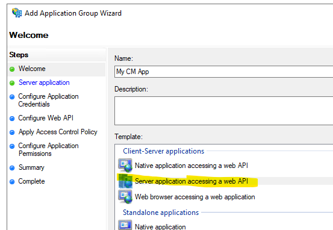
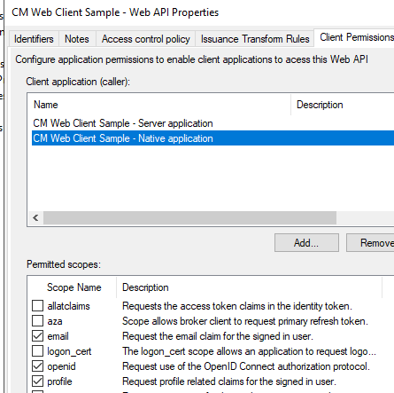
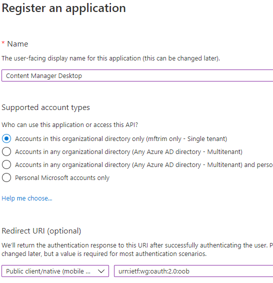
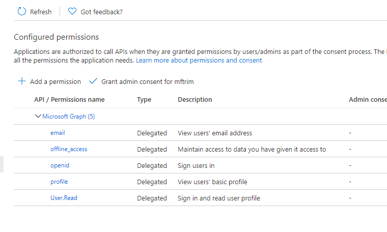

Authentication overview
OAuth authentication is managed via OpenId Connect authentication. The authentication is configured in yout Identity Provider (e.g. Azure AD) and then the appropriate details are stored in Content Manager in the hptrim.config file, for the Web Client and ServiceAPI or Enterprise Studio for the desktop client.
ADFS for WebClient and ServiceAPI
As of CM 10 the CM web applications (ServiceAPI, WebDrawer and Web Client) have an OpenId Connect authentication provider built in. This document describes creating an AD FS application and configuring the CM web application.
Create the AD FS Application
To create the AD FS application:
- create a new Application Group
- select 'server application accessing a web application'
- Enter a name.
- press Next
- take note of the client identifier
- add a Redirect URI. The redirect URI must be all in lowercase and be the URL of the Content Manager web site with the suffix '/serviceapi/auth/openid. For example:
https://myserver/contentmanager/serviceapi/auth/openid.
- press Next
- Generate a shared secret and take note of this secret
- press next
- add an identifier, for example:
https://MyServer/contentmanager/
- press next
- choose an access control policy (for example: 'Give access to everyone
- In 'Configure Application permissions select email, openid, and profile
- Complete the Application Group
Examples
New AD FS application

Add Redirect URI

Generate Secret

Specify Web API identifier

Add the settings to the Web Client
To configure the Web Client edit the hprmServiceApi.config file and add (or edit) the authentication element to look similar to the example below.
- Client Id and secret come from the previous section
- issuerUri is found in the AD FS console - Endpoints, in the OpenID Connect section
- name must be 'openid'
Example
<authentication allowAnonymous="false" slidingSessionMinutes="30">
<openIdConnect>
<add
name="openid"
clientID="CLIENT_ID"
clientSecret="SECRET"
issuerURI="https://MyServer/adfs/.well-known/openid-configuration"/>
</openIdConnect>
</authentication>
Configure AD FS for Office Integration access
The office integration requires an access token to allow it ro authenticate with the Web Client, this can be configured in AD FS:
- go the Application group configured above
- use 'Add Application' to add a native application
- preserve Client Id for later use
- complete the native application
- edit the Web API application and in Client Permissions add the new client application selecting the scopes email, openid and profile
- in Issuance Transform Rules add a new Rule
- select 'Send LDAP Attributes'
- select Next
- choose Active Directory as the attribute store
- map these two claims,
- Display Name - Name
- User-Principal-Name - UPN
- Finish
Examples
Add native application

Add permissions for native application

Specifiy claims to be included in token

Add office integration the settings to the Web Client
The office integration authentication settings are stored in the file ADFS\config.xml in the web client install directory:
- clientAuthority - the URL to your AD FS server
- clientResourceUri - the relying party identifier from the AD Fs Web API
- clientID - the Client Id from the AD FS native application
- The Redirect URI from the AD FS native application
<adfsClient>
<clientAuthority>https://acme.com/adfs</clientAuthority>
<clientResourceUri>https://acme.com/contentmanager/</clientResourceUri>
<clientID>ab762716-544d-4aeb-a526-687b73838a34</clientID>
<clientReturnUri>https://acme.com/contentmanager/</clientReturnUri>
</adfsClient>
AzureAD for WebClient and ServiceAPI
As of CM 10 the CM web applications (ServiceAPI, WebDrawer and Web Client) have an OpenId Connect authentication provider built in. This document describes creating an Azure Ad application and configuring the CM web application.
Create the Azure AD Application
To create the Azure AD application:
- From with portal.azure.com go to Azure AD.
- Go to App Registrations and select New Registration.
- Enter a name.
- Under Redirect URI leave Web selected.
- The value in the Redirect URI is important, it must be lowercase and it must be the URL to your application (e.g. https://mydomain.com/cmwebdrawer) followed by the path to the authentication provider (for example /auth/openid). The /auth/ component is fixed but the 'openid' is the name you will supply in hptrim.config later and so can be any string, as long as it matches the value in hptrim.config. For the web client the path must include the path to the ServiceAPI, for example: https://mydomain.com/contentManager/serviceapi/auth/openid.
Example

Add a secret
From Certificates and Secrets add a secret and copy it some where you can find it later.
Example

Configure authentication in hptrim.config
To use the Azure AD app created above edit hptrim.config (hprmServiceAPI.config in the Web Client) so that it has am authentication similar to the one below.
- The name must match the last segment of the Redirect URI path.
- Client ID is the application ID from the Azure Ad Overview.
- The secret is the one saved when creating the App. If it was not saved created a new one in Certificates and Secrets.
- Get the issuerUri from Overview > Endpoints > OpenID Connect metadata document
Example config
<authentication allowAnonymous="false" slidingSessionMinutes="60">
<openIdConnect>
<add
name="openid"
clientID="ae39011d-52e7-4ecc-b9eb-87d6d876dd"
clientSecret="_MqXXXXXXXXXXXXXXXG[sp3GrMfD:"
issuerURI="https://login.microsoftonline.com/08363ee4-6592-4325-9d5a-123456789/v2.0/.well-known/openid-configuration"
/>
</openIdConnect>
</authentication>
Enable redirect
The web client will not re-direct the authentication endpoint unless the Html feature is enabled in hprmServiceAPI.config. To do this:
- edit hprmServiceAPI.config
- find the property named 'serviceFeatures'
- Add the feature Html
Logout
For WebDrawer the logout link is configured in the uiSettings. It should contain '~/auth/logout'. In the Web Client a logout link will be displayed automatically when OpenId Connect authentication is enabled.
Example
<uiSettings
logoutLink="~/auth/logout"
...
/>
Allow anonymous access in the IIS
IIS will not be handling authentication so we use IIS Manager to allow anonymous access only.

Google authentication for WebClient and ServiceAPI
As of CM 10 the CM web applications (ServiceAPI, WebDrawer and Web Client) have an OpenId Connect authentication provider built in. This document describes creating Google credentials and configuring the CM web application.
Create the Google Credentials
To create the Google credentials:
- Go to https://console.developers.google.com/,
- Select Credentials > OAuth Client ID,
- Set Application type to 'Web Application'.
- Add your domain in the Authorized JavaScript origins
- The value in Authorized redirect URIs is important, it must be lowercase and it must be the URL to your application (e.g. https://mydomain.com/cmwebdrawer) followed by the path to the authentication provider (for example /auth/openid). The /auth/ component is fixed but the 'openid' is the name you will supply in hptrim.config later and so can be any string, as long as it matches the value in hptrim.config. For the web client the path must include the path to the ServiceAPI, for example: https://mydomain.com/contentManager/serviceapi/auth/openid.
- On saving the Client ID and Client Secret will be displayed, preserve them for later use.
Example

Configure authentication in hptrim.config
To use the Google credentials created above edit hptrim.config (hprmServiceAPI.config in the Web Client) so that it has am authentication similar to the one below.
- The name must match the last segment of the Redirect URI path.
- Client ID is the one preserved earlier.
- The secret is the one preserved earlier.
- The issuerURI is: https://accounts.google.com
Example config
<authentication allowAnonymous="false" slidingSessionMinutes="2">
<openIdConnect>
<add
name="openid"
clientID="741419278958-abcdefghijklmemopqrs.apps.googleusercontent.com"
clientSecret="jl-BiX7685hjgf76857y"
issuerURI="https://accounts.google.com"
/>
</openIdConnect>
</authentication>
Enable redirect
The web client will not re-direct the authentication endpoint unless the Html feature is enabled in hprmServiceAPI.config. To do this:
- edit hprmServiceAPI.config
- find the property named 'serviceFeatures'
- Add the feature Html
Logout
For WebDrawer the logout link is configured in the uiSettings. It should contain '~/auth/logout'. In the Web Client a logout link will be displayed automatically when OpenId Connect authentication is enabled.
Example
<uiSettings
logoutLink="~/auth/logout"
...
/>
Allow anonymous access in the IIS
IIS will not be handling authentication so we use IIS Manager to allow anonymous access only.
AzureAD for Content Manager Desktop
OpenID Connect may be used to authenticate with the Content Manager desktop client, this document details how to configure this.
Create the Azure AD Application
To create the Azure AD application:
- From with portal.azure.com go to Azure AD.
- Go to App Registrations and select New Registration.
- Enter a name.
- Select 'Public native client' in the Redirect URI
- Enter this redirect Uri 'urn:ietf:wg:oauth:2.0:oob'
Example

Configure permissions
From API Permissions add the following delegated Microsoft Graph permissions:
- email
- offline_access
- openid
- profile
- User.Read
Select 'Grant Admin Access' to grant access to all permissions.
Example

Configure authentication in Content Manager Enterprise Studio
To use the Azure AD app created above open Content Manager Enterprise Studio and:
- from the database choose Authentication > OpenID
- The OpenID Issuer URL is taken from the Azure App - Overview > Endpoints > OpenID Connect metadata document
- The Client Id is taken from the Azure App - Overview > Application ID
- Client secret should be empty
- Client app scope should contain 'openid email offline_access'
Example

Configure Azure AD for Office Integration access
The office integration requires an access token to allow it ro authenticate with the Web Client, this can be configured in Azure AD:
- create an Azure App for Web Authentication, you may use the one you created to authenticate with the CM Web Client,
- create (or edit) the file ADFS\config.xml in your CM Web Client installation folder and set it as follows:
Example Config
<adfsClient>
<clientAuthority>https://login.windows.net/cmofficedev.onmicrosoft.com</clientAuthority>
<clientResourceUri>api://auchurchla02:3000/09f0ec5c-87e9-4568-8b60-4eb3e20de75e</clientResourceUri>
<clientID>cf2501bd-10f0-4ad6-96dc-f5cf7b2b3bf5</clientID>
<clientReturnUri>http://MyWebClient</clientReturnUri>
</adfsClient>
Troubleshooting Azure AD for Office Integration access
Error AADSTS500011: The resource principal named https://MYSERVER/contentmanager/ was not found in the tenant named XXXX-XXXX-XXXXX-XXXXXX.
If you get this error try using the Client ID in clientResourceUri, rather than Application ID URI.